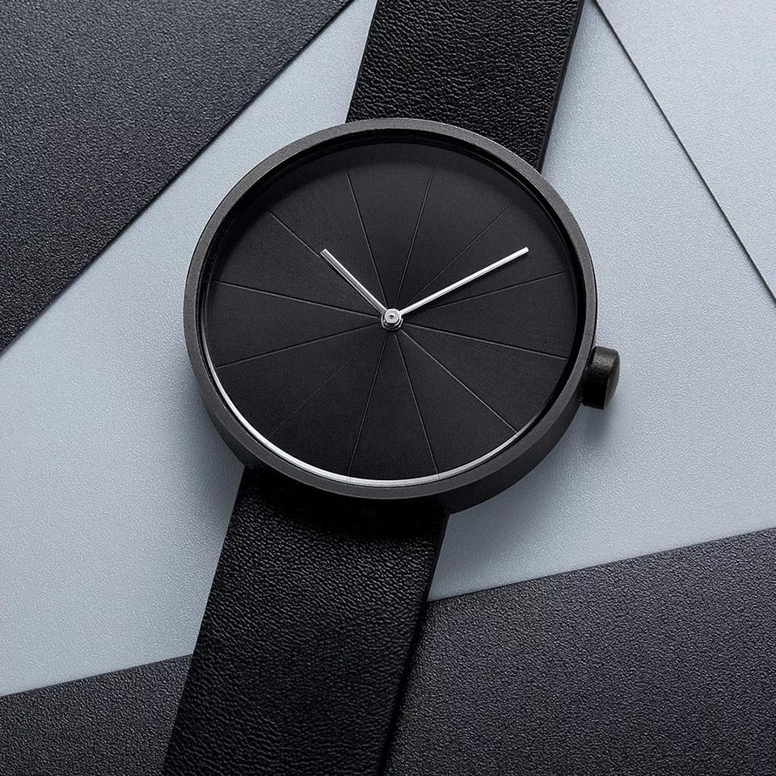
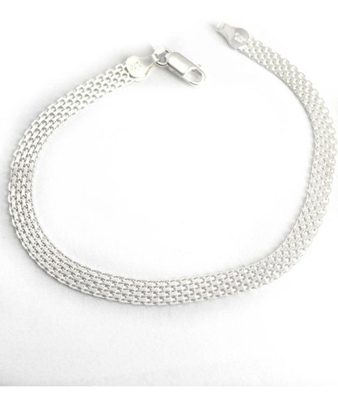

CASUAL
PARA VERSE BIEN EN CUALQUIER OCASION
COMO VESTIR CASUAL
Casual o informal no significa vestir como adolescente
!OLVIDA LOS ESTAMPADOS! Lo primero que deberías hacer para librarte de tu aspecto aniñado es dejar de ponerte camisetas estampadas. Sé que te encantan. A mí también me gustaban... pero tenia 15 años. No tienes más que fijarte en las películas. Nunca verás con una camiseta estampada a un héroe de acción duro y masculino, o a un galán de comedia romántica. las camisetas estampadas son para hombres inmaduros. No quieres que la gente te vea como un hombre inmaduro, ¿verdad? Pues sé un hombre y deja de ponerte camisetas estampadas. En vez de eso, opta por camisetas de un color liso, a rayas o de tipo Henley.
TENER DONDE VER LA HORA, TIENE ESTILO
Los accesorios son una buena manera de darle vida un conjunto aburrido. Y mi recomendación sobre cómo vestir casual y elegante para hombre es que empieces por acostumbrarte a llevar accesorios en la muñeca, ya sea, una pulsera o un reloj, o porque no ambos. LOS PANTALONES SON IMPORTANTES Al elegir pantalones, puedes usar un tipico jean azul o negro con una camisa lisa para ir a lo seguro, aunque usando pantalones tienes mayor variedad, ademas, Ten en cuenta que lucir un color por debajo de la cintura es algo que hacen pocos hombres, por lo que destacarás frente a ellos. Y no hace falta que te pongas nada de color verde lima ni rojo bombero: puedes optar por colores sutiles como el borgoña o el verde oliva.
Juan Amaya
"Soy un mechudo amante al buen vestir y la moda minimalista, tengo unos crespos a los que cuidar, mi equipo de trabajo es mi madre, quien es diseñadora de modas. Me gusta estudiar que prendas puedo usar para mantener mi toque de autenticidad."
Accesorios Recomendados
-

Reloj
Un reloj muy sencillo, de un color que va con todo, pero no deja a un lado la elegancia -
 Gafas de sol
Gafas de sol
unas gafas con bastante estilo, justo para verse como Hector Lavoe en su mejor momento -

Pulsera
El tipo de pulsera que te venga mejor dependerá en buena medida de tu estilo personal, en mi caso este tejido en plata, es mi favorito -
 Cadena
Cadena
una buena cadena de plata, no muy gruesa ni tan ostentosa, manteniendo la elegancia, da un excelente toque
Tags
MODA JOYERIA BOUTIQUE ROPA COLECCION Odin TENDENCIAS PRENDAS Regresar ESTILO ETIQUETA Dizfras ELEGANCIA CLASE
DEVELOPER


Follow Me
Subscribe
Enter your e-mail below and get notified on the latest blog posts.